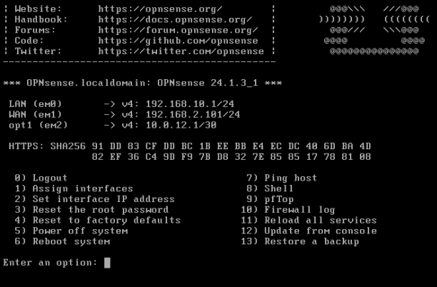
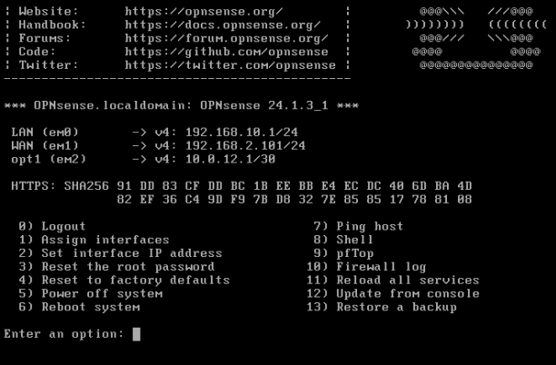

Window 10 PC Network Adapters
Window's PC CMD showing the three different network adapters.

BGP Project Topology
Topology of the project.

Opensense-Dev Router
Screen shot of Opensense-Dev's statically set IP addresses.
Window's PC CMD showing the three different network adapters.
Topology of the project.
Screen shot of Opensense-Dev's statically set IP addresses.
